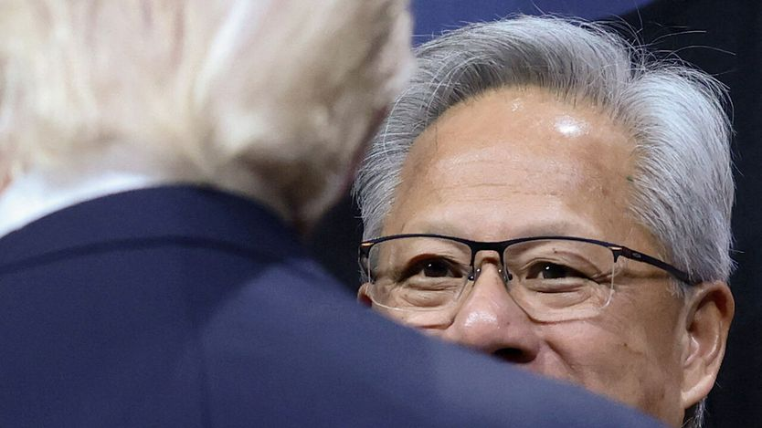

黄仁勋，与一个免责的时代
Jensen Huang and the age of impunity
硅谷与唐纳德·特朗普对权力的看法如出一辙，而这一点令人不安

- 英伟达董事会在调查尚未完成时就恢复了黄仁勋的职务，特朗普则亲自打电话施压、随后上电视邀功。两件事放在一起，说明问责机制在这家公司已经失效。
- 硅谷长期把创始人当偶像：从乔布斯回归苹果，到奥尔特曼扳倒 OpenAI 董事会，超级投票权与大佬施压让董事会形同虚设，而失去约束的鲁莽最终会反噬公司本身。
- 国会两党罕见地站到一边，要求查清芯片出口为何失控；黄仁勋 12 月 1 日要在三个委员会联席会议上作证，新的出口管制正借着国防法案往前推。
- 真正值得担心的不是这一周，而是它立下的规矩：只要讨得总统欢心，美国最重要公司的掌门人就可以不担责任，而法治的信任正是这样一点点被掏空的。
很难判断哪一幕更离谱。一周前，英伟达董事会才刚宣布黄仁勋的行为「不符合公司的行为准则、标准与文化规范」，可它连他与一名疑似中国特工的婚外情都还没查完，就把首席执行官的位置还给了他——是这一幕更荒唐？还是唐纳德·特朗普直接打进董事会电话，要求让黄仁勋官复原职、随后又在电视上炫耀自己的成功更荒唐？
黄仁勋的回归是一桩丑闻。但某种意义上，它并不令人意外。近日发生的一切说明，硅谷与美国总统对权力持有同一种「帝王式」的看法，而这种看法滋生出一种有恃无恐的文化。美国应当为此担心，世界也应当。
近几十年来，硅谷推崇一种企业控制观：把创始人奉为偶像，把公司治理当成笑话。这种态度可追溯到上世纪 90 年代末史蒂夫·乔布斯重返苹果的「凯旋」，此后又被写进谷歌、Meta、SpaceX 等巨头创始人的超级投票权股份里。不过，即便创始人没有正式控制权，这套逻辑照样运转。看看 2023 年萨姆·奥尔特曼重新出任 OpenAI 掌门人：他和黄仁勋一样，都是在硅谷其他大佬的施压下扳倒自家董事会。
杰出的创始人确实能成就非凡之事。投资者对黄仁勋回归的反应近乎狂喜——英伟达市值一天之内涨了 1 万亿美元——足见他们给这个人标了多高的价，尤其是在特朗普保证这位首席执行官不会面临刑事起诉之后。
然而不受约束的权力往往会带来鲁莽，最终伤及公司，有时还伤及整个社会。20 世纪的美国之所以逐渐告别由创始人一手掌控的企业，正是为了避开这类风险。亨利·福特造出了美国最大的汽车公司，却在 1920 年代固执地拒绝更新 T 型车，把霸主地位拱手让人。塞缪尔·英萨尔、霍华德·休斯等一批专断的创始人，也同样因傲慢把自己的企业带进了灾难。
把科技创始人当偶像，同样出了岔子，这并不奇怪。马克·扎克伯格屡次对 Meta 股东关于其昂贵副业的抱怨置之不理；他还被指无视员工的警告——那些警告说，他的社交平台正在毒化公共讨论、损害年轻人的心理健康。在黄仁勋主政期间，英伟达被指对中国获取其芯片的努力睁一只眼闭一只眼。据称他还与至少两名下属有婚外情。
不受制约的权力落到政府领导人手里，问题更大。特朗普为黄仁勋出面，动机不止一个。其中之一是担心英伟达失去这位长期掌舵者会垮掉，并把股市一起拖下水。「我们必须保护我们的天才，」总统说——他本人恰好持有英伟达股票。此外，他从这位芯片巨头掌门人身上看到了自己与批评者缠斗的影子。黄仁勋复职后，总统在网上发了一张改图：原图是他在一次暗杀未遂中流着血、倔强地举起拳头，如今画面里的人换成了黄仁勋——手里高举一件红色胸罩。中期选举失利、反 AI 情绪日益高涨，似乎都没让特朗普有所收敛。
国会必须行动。令人稍感宽慰的是，不少共和党人与民主党人一道谴责了黄仁勋的复职。他们现在应当携手调查：为什么英伟达和商务部没能管住芯片出口，并推动立法把网收紧。那位让英伟达芯片流入中国人手里的商务部长霍华德·卢特尼克居然还在任上，简直难以置信。
股东们或许为英伟达股价反弹而欣喜。但长远看，一个更能干、能制衡黄仁勋、并确保继任安排到位的董事会，才真正符合他们的利益。黄仁勋才华再高，他与特朗普的结盟也会让公司成为民主党人的靶子——而两年多之后，白宫就可能换一位民主党主人。
黄仁勋的回归传递了一个危险信号：美国最重要公司的掌门人，只要得到总统的青睐，就不必承担责任。让一个镀金的精英阶层按自己的规则行事，会侵蚀人们对法治的信任。这不是治理经济的方式。■